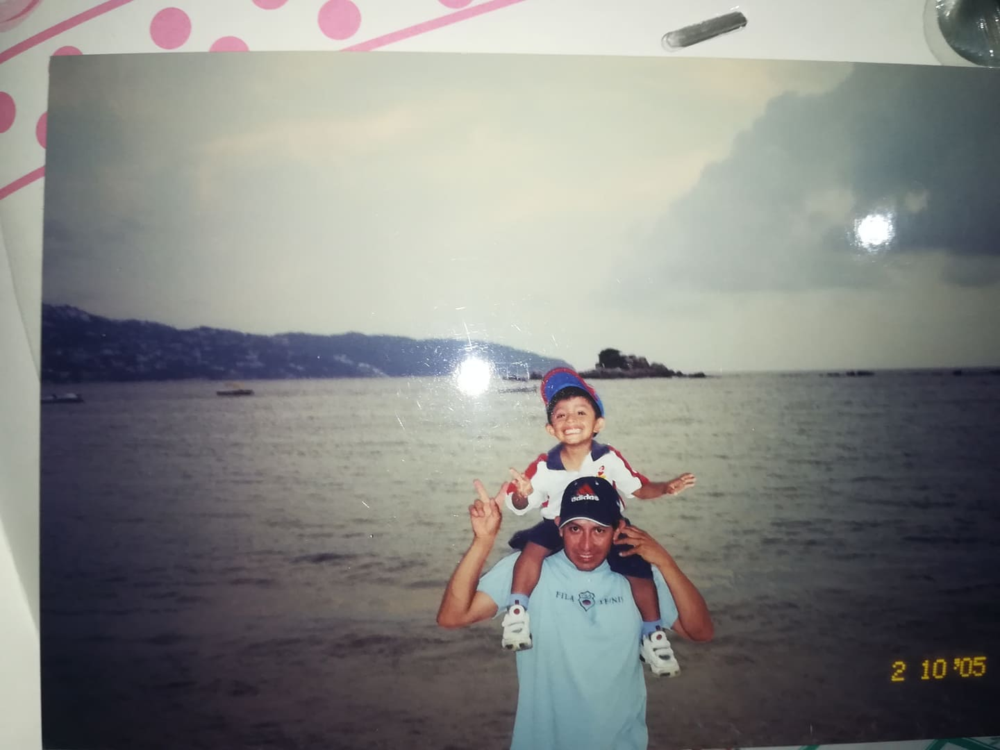

Mi infancia a mi parecer fue buena ya que yo tuve mucho tiempo junto a mi mamá , ella es la mejor ella me cuidaba todo el dia e incluso jugabamos mucho y a lo mejor no sabia a la gran persona que tenia hasta ese momento puesto que mis padres comenzaron a tener muchos problemas por lo que ellos optaron por divorciarse y para ese entonces ya habia nacido mi hermana llamada Evelyn y pues mi mamá al principio creyo que mi papá nos iba a ayudar econimicamente y debo reconocer que al principio era asi pero llego un momento en el que el dejo de vernos e incluso de pasarnos una pencion y pues desde hace ya casi 12 años no se nada de el pero sinceramente tampoco es que tenga interes por una persona que no vale la pena
